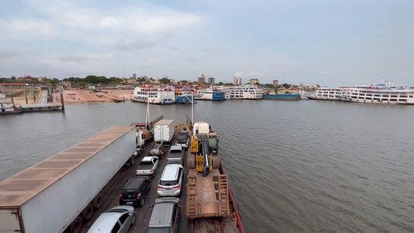

00:00:30.160
Vista do convés da balsa sobre uma fileira de carros, um caminhão e máquinas. Atrás, aparecem a orla e barcos atracados.
Orla de Santarém, Santarém (PA) · confirmado
O apresentador inicia o trajeto de Santarém a Macapá pela travessia de balsa.
Transcrição · 00:00:18 | 00:00:25 | 00:00:32 | 00:00:39
Turismo Aqui — quadro de vídeo publicado no YouTube